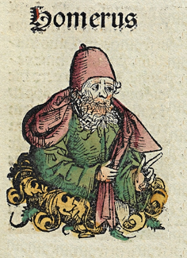

Homeric style
The Homeric poems were composed in unrhymed dactylic hexameter; ancient Greek metre was quantity-based rather than stress-based.[57][58] Homer frequently uses set phrases such as epithets ('crafty Odysseus', 'rosy-fingered Dawn', 'owl-eyed Athena', etc.), Homeric formulae ('and then answered [him/her], Agamemnon, king of men', 'when the early-born rose-fingered Dawn came to light', 'thus he/she spoke'), simile, type scenes, ring composition and repetition. These habits aid the extemporizing bard, and are characteristic of oral poetry. For instance, the main words of a Homeric sentence are generally placed towards the beginning, whereas literate poets like Virgil or Milton use longer and more complicated syntactical structures. Homer then expands on these ideas in subsequent clauses; this technique is called parataxis.
Homeric writing style
Writing Characteristics
- dactylic hexameter
- Epithets
- Type scenes
- chiastic structure
- muse
Modern literature
Various works that have been influcenced by the Odyssey(links are clickable)